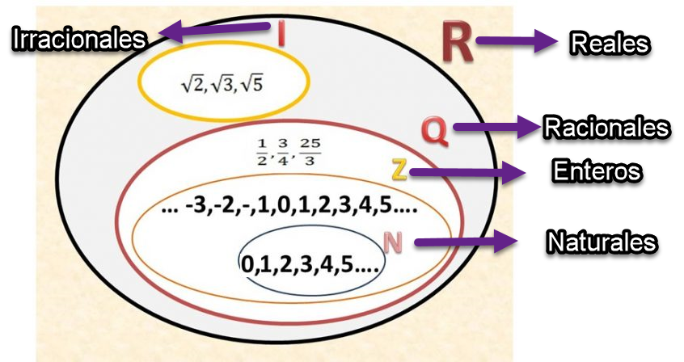
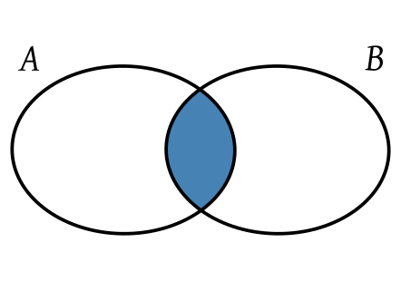
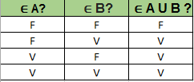

Métodos Discretos
Brandon Larrosa / Correo: brandonlarrosa@anima.edu.uy
Unidades
Unidad 1
Conjuntos
Conjuntos Númericos
Definición Conjunto
Un conjunto es una agrupación de elementos que tienen características en común
Un conjunto no puede tener elementos repetidos
- El nombre del conjunto se escribe en mayúscula,
ejemplo A - Para decir que un elemento pertenece a un conjunto,
se escribe: elemento ∈ A - Para decir que un elemento no pertenece a un conjunto,
se escribe: elemento ∉ A
Maneras de definir conjuntos
- Extensión
- Comprensión
Extensión
Consiste en anotar todos los elementos que pertenecen al conjunto
- Los elementos del conjunto van entre corchetes,
ejemplo A={elemento1,elemento2} - Cada elemento es separado por comas ","
- A={1,2,3,4}
Comprensión
Consiste en anotar las características de los elementos del conjunto
- A={x ∈ N / x > 0 ^ x<5}
Maneras de representar conjuntos
Diagrama de Venn
Consiste en anotar los elementos del conjunto en un diagrama.
Este se denomina diagrama de Venn
Subconjunto o inclusión
Sean dos conjuntos A y B.
Se dice que A es subconjunto de B o que A está incluido en B, y se anota A ⊂ B , cuando todo elemento de A es también un elemento de B
Operaciones entre conjuntos
Unión
Sean dos conjuntos A y B.
Se denomina A ∪ B, se lee A uníon B, a un nuevo conjunto que tiene como elementos
a aquellos que están en A o están en B, o bien pertenecen a ambos
Intersección
Sean dos conjuntos A y B.
Se denomina A ∩ B, se lee A intersección B, a un nuevo conjunto que tiene como elementos
a aquellos que están en A y están en B a la misma vez
Diferencia
Sean dos conjuntos A y B.
Se denomina A - B, se lee A menos B, a un nuevo conjunto que tiene como elementos
a aquellos que están en A pero que no están en B
Complemento
Sea el conjunto A.
Se denomina A' o Ac, se lee complemento de A, a un nuevo conjunto que tiene como elementos
a aquellos que no están en A pero si en el Universo
Diferencia simétrica
Sean dos conjuntos A y B.
Se lee diferencia simétrica de A con B, a un nuevo conjunto que tiene como elementos
a aquellos que están en A , están en B, pero no en los dos a la misma vez.
Analogía de operaciones con lógica
Disyunción inclusiva y unión
Conjunción e intersección
Negación y complemento absoluto
Unidad 2
Relaciones
Introducción
- Las empresas manejan una gran cantidad de datos
- Los datos se almacenan en bases de datos
- Las bases de datos usan el modelo de datos relacional en cual se reflejan las relaciones entre los diferentes sectores
Una relación puede considerarse como una correspondencia entre los elementos de uno o más conjuntos
Par ordenado
Un par ordenado se escribe (x,y)
Donde x es un elemento del primer conjunto
Donde y un elemento del segundo conjunto
Producto cartesiano
Sean los conjuntos A y B
Se denomina producto cartesiano,se escribe AxB, al conjunto formado por todos los pares ordenados (x,y) posibles entre A y B
Donde x pertenece al conjunto A
Donde y pertenece al conjunto B
Relación binaria (Relación)
Sean los conjuntos A y B
Una relación binaria de A en B es un subconjunto del producto cartesiano AxB.
La relación se escribe con la letra R
R={(x1,y1),(x2,y2)...}
Dominio
El dominio de la relación es el conjunto formado por todos los elementos x de los pares ordenados de la misma
- Si el elemento x está en más de un par ordenado no figura más de una vez en el dominio
Conjunto Imagen
El Conjunto Imagen de la relación es el conjunto formado por todos los elementos y de los pares ordenados de la misma
- Si el elemento y está en más de un par ordenado no figura más de una vez en el dominio
Representación de relaciones
Representación de relaciones
Consiste en realizar los diagramas de cada conjunto. Luego señalar con flechas los elementos que se relacionan. Es importante tener en cuenta si la relación es de A->B o de B->A , ya que, va a incidir en nuestra representación.

Representación de relaciones
Colocaremos los elementos X verticalmente; los elementos Y horizontalmente.
En el cruce de elementos x,y con 1(Indicamos que par ordenado pertenece a la relación).
En el cruce de elementos x,y con 0(Indicamos que par ordenado no pertenece a la relación).